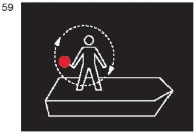
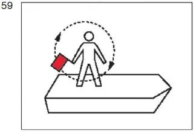

§ 3.30 Notzeichen(Anlage 3: Bild 59)
Binnenschifffahrtsstraßen-Ordnung
1. Ein in Not befindliches Fahrzeug, das Hilfe durch Sichtzeichen herbeirufen will, kann zeigen:
a) bei Nacht:
ein Licht, das im Kreis geschwenkt wird; |  |
b) bei Tag:
eine rote Flagge, die im Kreis geschwenkt wird, oder einen sonstigen geeigneten Gegenstand, der im Kreis geschwenkt wird. |  |
2. Die Sichtzeichen nach Nummer 1 ersetzen oder ergänzen die Schallzeichen nach § 4.04.